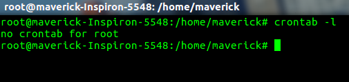
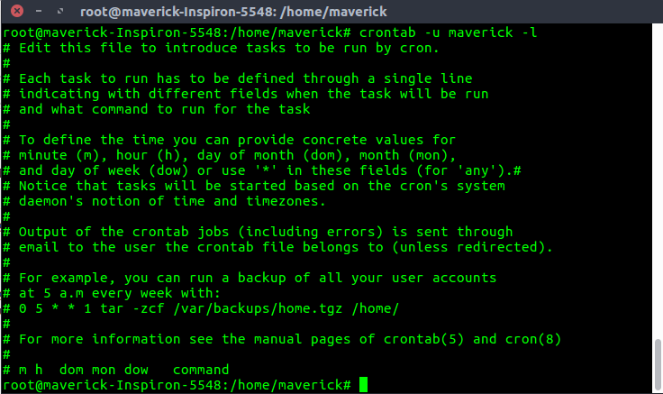

crontab是您希望定期运行的命令列表，以及用于管理该列表的命令的名称。 Crontab代表“cron table”，因为它使用job scheduler cron来执行任务; cron本身以“chronos”命名，这是希腊时间的词。 cron是系统进程，它将根据设定的时间表自动执行任务。 该计划称为crontab，它也是用于编辑该计划的程序的名称。
Linux Crontab格式
MIN HOUR DOM MON DOW CMD
Crontab字段和允许范围（Linux Crontab语法）
Field Description Allowed Value MIN Minute field 0 to 59 HOUR Hour field 0 to 23 DOM Day of Month 1-31 MON Month field 1-12 DOW Day Of Week 0-6 CMD Command Any command to be executed.
Cron工作的例子
1.在特定时间安排作业
cron的基本用法是在特定时间执行作业，如下所示。 这将在6月10日上午08:30执行完整备份shell脚本（完全备份）。
时间字段使用24小时格式。 因此，对于上午8点使用8，并且对于晚上8点使用20。
30 08 10 06 * /home/maverick/full-backup
30 - 30分钟
08 - 08 AM
10 - 10日
06 - 6月（6月）
* - 一周的每一天
2.查看Crontab条目
- 查看当前登录用户的Crontab条目：要查看您的crontab条目，请从您的unix帐户输入crontab -l。

- 查看Root Crontab条目：以root用户身份登录（su - root）并执行crontab -l。

- 要查看其他Linux用户的crontab条目：登录到root并使用-u {username} -l。

3.编辑Crontab条目
编辑当前登录用户的Crontab条目。要编辑crontab条目，请使用crontab -e。 默认情况下，这将编辑当前登录用户crontab。 
4.使用Cron安排每分钟的工作。
理想情况下，您可能无需每分钟安排一份工作。 但是理解这个例子将有助于您理解其他示例。
* * * * * CMD
*表示所有可能的单位 - 即全年每小时的每分钟。 除了直接使用此*之外，您会发现它在以下情况下非常有用。
在分钟字段中指定* / 5表示每5分钟一次。
当您在前10分钟内每2分钟指定0-10 / 2分钟字段时。
因此，上述惯例可用于所有其他4个字段。
5.安排工作多次（例如每天两次）
以下脚本每天两次进行增量备份。
此示例在每天的11:00和16:00执行指定的增量备份shell脚本（incremental-backup）。 字段中的逗号分隔值指定需要在所有提到的时间内执行命令。
00 11, 16 * * * /home/maverick/bin/incremental-backup
00 - 0分钟（最高分）
11,16-11 AM和4 PM
* - 每天
* - 每个月
* - 一周的每一天
6.安排一段时间的工作（例如仅在工作日）
如果您希望在特定时间范围内每小时安排一份工作，请使用以下内容。
- Cron Job每天工作时间：
此示例在上午9点至下午6点的工作时间内每天（包括周末）检查数据库的状态00 09-18 * * * /home/maverick/bin/check-db-status00 - 0分钟（最高分）
09-18 - 上午9点，上午10点，上午11点，上午12点，下午1点，下午2点，下午3点，下午4点，下午5点，下午6点
* - 每天
* - 每个月
* - 一周的每一天 - Cron Job每个工作日在工作时间：
此示例在工作时间上午9点至下午6点检查每个工作日（即不包括星期六和星期日）的数据库状态00 09-18 * * 1-5 /home/maverick/bin/check-db-status00 - 0分钟（最高分）
09-18 - 上午9点，上午10点，上午11点，上午12点，下午1点，下午2点，下午3点，下午4点，下午5点，下午6点
* - 每天
* - 每个月
1-5周五，周二，周三，周四和周五（每个工作日）
7.每10分钟安排一次后台Cron工作。
如果要每10分钟检查一次磁盘空间，请使用以下命令。
*/10 * * * * /home/maverick/check-disk-space
它每年10分钟执行指定的命令check-disk-space。 但是，您可能只需要在某些时间执行命令，反之亦然。 以上示例显示了如何执行这些操作。我们可以使用单个关键字指定它，而不是在5个字段中指定值。
在某些特殊情况下，您可以使用@后跟关键字代替上述5个字段，例如reboot，midnight，annual，hourly。
Cron特殊关键词及其含义
Keyword Equivalent @yearly 0 0 1 1 * @daily 0 0 * * * @hourly 0 * * * * @reboot Run at startup.
8.使用@yearly安排每年第一分钟的工作
如果您希望在每年的第一分钟执行作业，那么您可以使用@yearly cron关键字，如下所示。这将使用年度维护shell脚本在1月1日00:00执行系统年度维护每年。
@yearly /home/maverick/bin/annual-maintenance
9.使用@monthly安排每个月初的Cron工作
它和上面的@yearly类似。 但是每月使用@monthly cron关键字执行一次命令。这将在每月1日00:00执行shell脚本磁带备份。
@monthly /home/maverick/bin/tape-backup
10.使用@daily每天安排后台工作
使用@daily cron关键字，这将在每天00:00使用cleanup-logs shell脚本进行每日日志文件清理。
@daily /home/maverick/bin/cleanup-logs "day started"
11.使用@reboot每次重启后执行linux命令
使用@reboot cron关键字，这将在每次启动机器后执行一次指定的命令。
@reboot CMD
参考： cron的Linux手册页